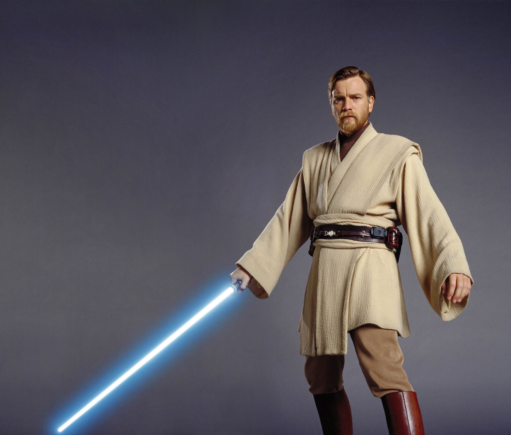

About Obi-Wan Kenobi
He has the highground and is space jesus
Kenobi looking for hands to slice
Fun Facts about Kenobi
- He's got the highground
- Voted "The Galxies hottest man" in 22BBY
- Has all his limbs
People Obi-Wan has dismembered.
Obi-Wan Kenobi holds the record for most severed hands on screen. Click on the links below to see their reaction to being "Kenobied"